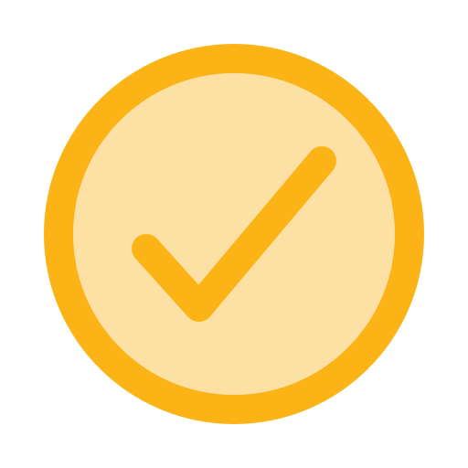

Involúcrate
Al unirte a Rotary pasarás a formar parte de un grupo diverso de profesionales, quienes comparten tu
interés en retribuir a la comunidad.
Las reuniones y los eventos de los clubes te ofrecerán la
oportunidad de:
 Abordar las
necesidades de la comunidad de manera innovadora.
Conectarte
con otros líderes agentes del cambio.
Perfeccionar
tus competencias profesionales y dotes de liderazgo.
Hacer lazos
con nuevos amigos.